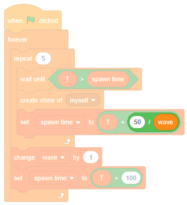
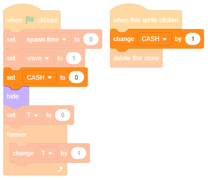

Introduction
In the future, a huge asteroid on a collision-course with Earth might not be seen as a disaster.
In fact it might be celebrated, because asteroids often contain precious metals like gold and platinum, and we might have spacecraft that can mine them.
Two asteroids
Load up the project you saved at the end of the last module.
Let's send two asteroids towards Earth. We will need to use clones, so we don't want to show, position and move the asteroid when the green flag is clicked — split that script off...

... and snap it under a when I start as a clone:

Click create clone of myself. What happens?
Remember to delete the clone if it crashes into Earth:
If it's clicked, don't hide it any more... just delete it:
Make sure that the template is hidden when the green flag is clicked:
Now add some code to create two clones, spaced 1 second apart:
Click the green flag. What happens?
Good. You should test that you can still destroy each of them by clicking them, and also test that they disappear if they crash into Earth.
Waves of asteroids
Two asteroids are more fun than one, but it would be even more fun to send wave after wave of asteroids. We can make each wave more challenging than the first.
Create a variable named T (for all sprites) to keep track of the time. You can think of T as the number of ticks of a very fast clock. Early waves can have lots of time between each asteroid; later waves can be denser.
When the green flag is clicked, set T to zero and then forever increment it:
Create a new variable named spawn time (for this sprite only) to keep track of when a new asteroid should spawn. Set it to zero when the green flag is clicked:
Add a new when  clicked and snap a repeat 5
underneath. Inside the repeat-loop, nest a create clone of myself:
clicked and snap a repeat 5
underneath. Inside the repeat-loop, nest a create clone of myself:
Click the green flag. What happens?
To space the asteroids out, add a wait until before creating the clone. Wait until T is greater than spawn time. Then, after creating the clone, set spawn time to T + 50 — after one asteroid is cloned, the next one will have to wait for 50 'ticks':
Click the green flag. Are the asteroids more spread out this time?
Good. This is a single wave of 5 asteroids; let's send more waves.
Create a variable named wave (for this sprite only). Set it to 1 when the green flag is clicked:
Wrap the repeat-loop inside a forever-loop, and increment wave after each wave has finished creating clones. Also, make the delay bigger between waves:
Click the green flag and avoid the urge to destroy the asteroids. Do you see a wave of five, then a break, then another wave of five, and so on?
Let's make waves denser each time. Instead of waiting for 50 ticks, wait for 50 / wave ticks — with each wave the delay will get shorter:

Click the green flag and watch three waves. Does each wave get denser?
Let's also make the asteroids faster with each wave. Unsnap the set speed to 3 that runs when the green flag is clicked, and snap it in just before the repeat-loop. Instead of setting speed to 3, set it to wave:
Click the green flag and watch three waves. Does each wave get faster?
Good. Time to earn some cash.
Cash
Create a variable named CASH (for all sprites). Set it to zero when the green flag is clicked, and increment it whenever an asteroid is clicked:

Uncheck all the variables except for CASH. Click the green flag and try to destroy some asteroids. Does CASH increase each time you succeed?
Let's customize the display, that is, let's show our cash the way we want it to look, rather than relying on Scratch's grey and orange box.
Paint a new sprite named 'Cash number'. Rename the first (empty) costume to '1'. Duplicate this costume until there are ten of them. The names of the costumes should automatically go 1, 2, 3... etc, which is what we want, except change the last one to '0' rather than '10'.
Select costume '1', select the Text tool and browse the dropdown of fonts.
I like the Handwriting font; feel free to pick whichever you like.
Set the Fill colour to grey, click in the middle of the drawing area then type the number '1'. Change to the Select tool and snap the number to the centre:
Use Ctrl + C and Ctrl + V to copy and paste that number into costume '2'. Switch to the Text tool and change the number to '2'.
Repeat until each costume contains the appropriate number. Make sure that costume '0' contains the number '0', not '10'!
We will use clones of this sprite to handle numbers all the way up to 999. How many clones will we need?
That's right — one clone for each digit.
Add the usual hide-template-show-clone blocks. Create a variable named place (for this sprite only) and loop over three places, cloning as we go:
Click the green flag. What has happened to our 3 clones?
We need to space the digits out — add a change x by 11 after cloning each digit:
Note: we are always showing all three clones. But if CASH is one digit long, we only want to show the first clone (and if two digits, the first two clones).
So, when each clone starts, instead of just showing it, add some code to show it if need be, otherwise hide it:
Now we just need to set each clone to the correct costume, and to wrap things inside a forever-loop so clones update themselves whenever CASH changes:
Click the green flag, and set CASH to a few different numbers (less than a thousand). What happens?
Good - we've made a custom display.
What do you think will show up if you set CASH to 1234?
Right. This is called a 'silent failure'. Our custom display will handle numbers less than a thousand, but numbers greater than that will seem like they've been handled, but what's displayed will be incorrect. It's usually better to 'fail hard' than to fail silently.
However, there are a few different ways to handle errors in Scratch, each with their pros and cons, so we'll just fail silently for now and explore error handling some other day.
But there's another bug with this display — since we change x by 11 3 times whenever the green flag is clicked, the display gradually shifts to the right. Let's fix that.
Final tweaks
Paint a new sprite, naming it 'Cash text'.
In the Costumes tab, select the Text tool and click in the middle of the drawing area.
Type in Cash: $ then select the Select tool and snap it to the centre:
Drag the sprite across the stage, to the top left corner:
Note its x and y position — my sprite is at (-200, 160) but yours might be positioned slightly differently.
Switch back to the 'Cash number' sprite, and switch to the Code tab. When the green flag is clicked, position the template just to the right of the 'Cash text' sprite — mine needs to be at (-160, 160) but yours might need a slightly different position:
Click the green flag. What do you see?
Click a few asteroids. Does the amount of cash, shown in our custom display, increase?
Good. One last tweak — the waves get too challenging, too quickly. Let's increase the difficulty more gradually.
Add the abs of block and change it to sqrt of — the 'square root' operator.
The square root of 4 is 2, because 2 multiplied by itself makes 4 (that is, 2 × 2 = 4).
The square root of 9 is 3, because 3 multiplied by itself makes 9 (that is, 3 × 3 = 9).
The square root of any number is whatever you have to multiply by itself to make that number.
As wave gets bigger, the square root of wave also gets bigger, but much more slower. If we replace wave with sqrt of wave then we will eventually have asteroids flying towards Earth with speed 3 but, instead of that happening during wave 3, it will happen during wave 9.
Make that change, and also change the delay between asteroids in the same way:
Click the green flag. Do the asteroids get faster in each wave?
Great! Click the full screen button, click the green flag, and see how much cash you can earn before an asteroid crashes into Earth.
Next steps
Save your project.
In the next few modules we will:
- improve the art with a starry background and explosion effects
- give Earth a health bar
- make a 'turret' to automatically shoot asteroids
- create a shop for buying extra turrets
Feel free to try out any of those ideas beforehand, or to try a different idea of your own instead.
What did you think of this module?
I didn't like it

It was OK

I loved it